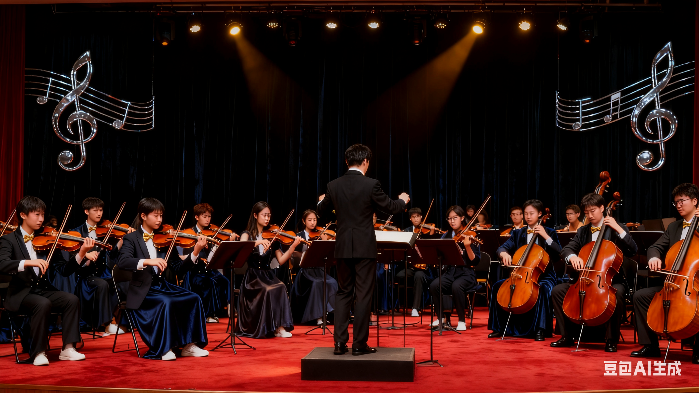
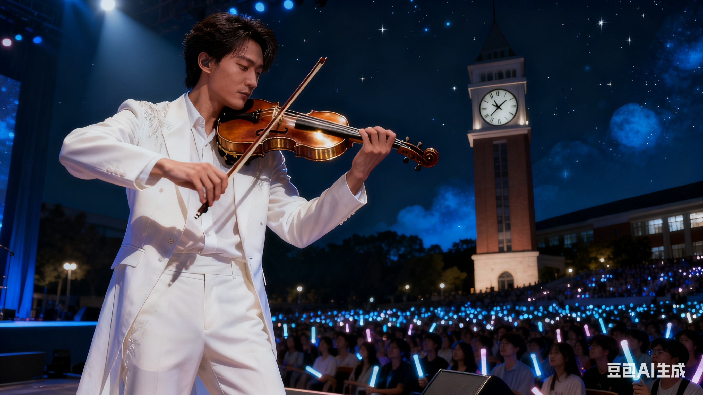

社团简介 | 活动安排 | 风采展示 | 社员故事 | 在线报名
校园小提琴社成立于 2015 年，是学校内最活跃的文艺类学生社团之一。 社团以小提琴为主要载体，组织练琴、合奏、校园音乐会等多种形式的活动， 为喜爱古典音乐的同学提供一个交流与展示的平台。
无论你是零基础的新手，还是已经能熟练独奏的老玩家， 只要对小提琴和古典音乐有兴趣，都欢迎加入小提琴社。 社团会安排老成员一对一帮带，帮助大家从指法、节奏到舞台表现逐步提高。
社团平时的活动地点主要在学生活动中心的音乐教室， 每周会安排固定的练习时间，也会根据需要加练， 为各种校园演出和比赛做好准备。
为了让大家更好地了解小提琴社的日常，本学期计划安排如下几项主要活动。 具体时间可能会根据学校统一安排略作调整，详情请关注社团通知。
| 小提琴社 2025 年春季学期活动安排表 | |||
|---|---|---|---|
| 活动名称 | 活动时间 | 活动地点 | 负责人 |
| 新成员见面会 | 12 月第 2 周 周五晚 | 学生活动中心 音乐教室 201 | 帕格尼尼 |
| 小提琴基础教学公开课 | 12 月第 3 周 周六下午 | 柴可夫斯基 | |
| 梁山伯与祝英台合奏路演会 | 1 月第 2 周 周日 | 前门广场 | 吕思清 |
| 期末专场音乐会 | 6 月第 1 周 周六晚 | 大学生活动中心 大礼堂 | 维瓦尔第 |
上表仅列出了部分代表性活动，日常还会有小型即兴合奏、经验分享等活动， 欢迎有想法、有创意的同学参与策划。

图中为上学期“夏日之声”校园音乐会上，小提琴社成员的集体演出场景。 平时的训练与排练，都会在正式演出中得到充分的展示机会。
小李大一刚加入小提琴社时，对这门乐器一无所知——连如何握弓、怎样认五线谱都要从零学起。 在学长学姐的耐心指导下，他从最基础的站姿练起：如何将琴托轻轻抵在锁骨上，左手怎样在指板上找准位置，右手又该如何控制弓弦的力度。最初拉出的音符生涩断续，连最简单的《小星星》都像在锯木头。 但他没有放弃。每天晚自习结束后，他都会准时出现在社团活动室，对着谱架练习一小时。从空弦练习到音阶，从《欢乐颂》片段到《卡农》的旋律，他的指尖渐渐磨出薄茧，琴弓也找到了与琴弦最和谐的夹角。 一个学期后的新年晚会上，当舞台追光灯打在他身上时，他深吸一口气，将琴托轻轻抵在肩上。随着琴弓滑过琴弦，舒伯《小夜曲》的旋律如水般流淌而出——这一次，每个音符都饱满而深情，整首曲子在他指间完美绽放。
上学期，校内金属乐队Architects找到小提琴社提出合作出演曲目， 在多方协作和乐手们的共同努力下，终于将这一古典金属乐搬上了校音乐会的舞台
如果你也喜欢音乐，期望在大学生活中拥有一段与音乐相关的美好回忆， 欢迎加入我们，一起在琴弦上演奏青春的旋律。
请认真填写以下信息，确保联系方式准确无误。 提交后，社团会通过电话或短信的方式通知面谈或试音时间。
提交表单后，如需修改信息，可以再次填写并提交最新的一份。
校园小提琴社 · 2025 招新示例网页
本页面仅作为 HTML 基础实验的示例代码。